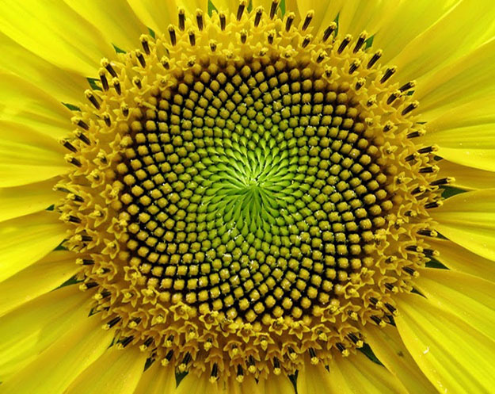

| Immagine di un frattale, in questo caso un girasole |
|---|
|  |
Un frattale è un oggetto geometrico dotato di omotetia interna: si ripete nella sua forma allo stesso modo su scale diverse, e dunque ingrandendo una qualunque sua parte si ottiene una figura simile all'originale. Si dice quindi geometria frattale, la geometria (non euclidea) che studia queste strutture, ricorrenti ad esempio nella progettazione ingegneristica di reti, nel moto browniano e nelle galassie.
Questa caratteristica è spesso chiamata similarità oppure autosomiglianza.
Il termine frattale descrive alcuni comportamenti matematici che sembravano avere un comportamento "caotico", e deriva dal latino fractus (rotto, spezzato), così come il termine frazione. Infatti le immagini frattali sono considerate dalla matematica oggetti di dimensione anche non intera.
I frattali compaiono spesso nello studio dei sistemi dinamici, nella definizione di curve o insiemi e nella teoria del caos e sono spesso descritti in modo ricorsivo da algoritmi o equazioni molto semplici, scritte con l’ausilio dei numeri complessi.
I frattali permettono di affrontare problemi di fronte ai quali la matematica tradizionale si doveva arrestare.
Permette di affrontare il problema di capire e descrivere l’architettura che governa la natura; come è distribuita geometricamente la materia planetaria nello spazio universale.